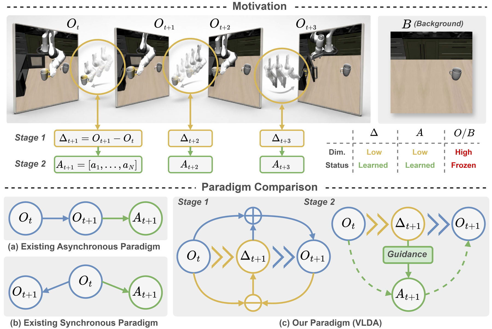
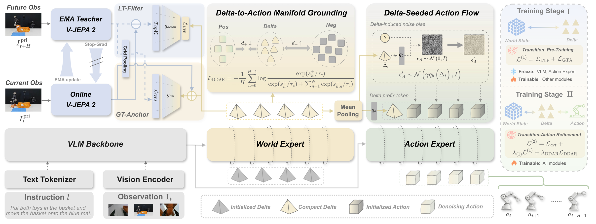
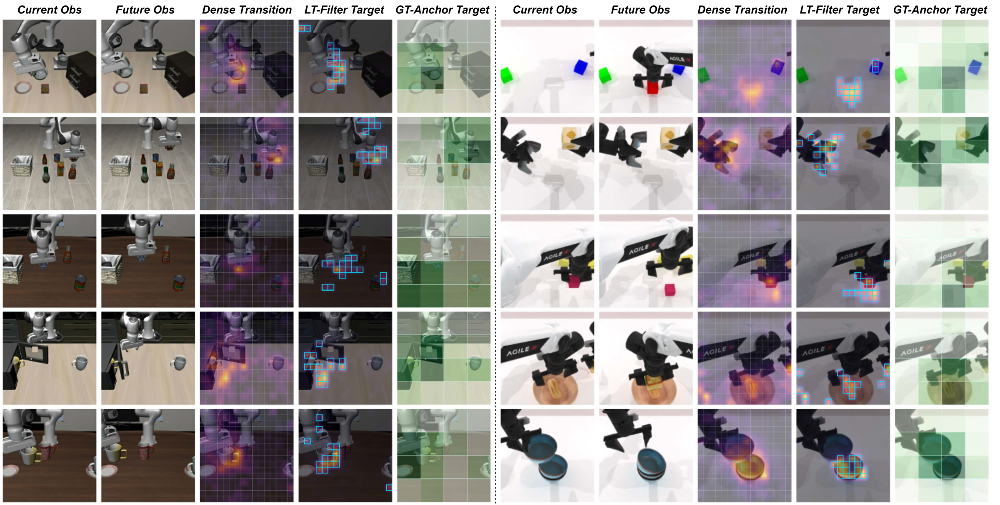

LoongForge-VLDA
Vision-Language-Delta-Action: learning compact Deltas as actionable transition interfaces for robotic manipulation.
1 Harbin Institute of Technology, Shenzhen · 2 Baidu, Inc. · 3 Shenzhen Loop Area Institute
* Equal contribution † Corresponding author
01The idea
Don't predict the whole future. Capture the change.
What does an action actually change? Manipulation is a chain of state transitions, and most of every frame stays the same. VLA models must infer that change implicitly; world-action models predict whole future frames and spend capacity on pixels that never move.
VLDA distills only what changes into a compact Delta and hands it to the action head as an explicit interface: understand the scene, express the transition, then execute.

02The method
From a Delta to an action, in three moves.
A V-JEPA 2 EMA teacher provides the target transition. Two filters distill it into a Delta; one refinement module feeds it back into the action head.
Local Transition Filter
Selects the top-64 regions with the largest transition magnitude and matches them to the predicted Delta by Sinkhorn optimal transport, so the Delta is not diluted by static background.
Global Transition Anchor
Anchors the local patches to a global summary of the transition, keeping the Delta consistent with the task as a whole.
Delta-Driven Action Refinement
DAMG grounds the Delta on the action manifold with an InfoNCE loss. DSAF seeds the action flow with a Delta-based noise bias and a prefix token.

Pre-train the Delta from the teacher, without actions.
L1 = L_LTF + L_GTA
Train the action head with the Delta as an interface, keeping the stage-1 loss as a regularizer.
L2 = L_act + λ·L1 + λ_DDAR·L_DDAR
Built on LoongForge. VLDA is trained with the LoongForge embodied stack: DDP, ZeRO-1, FSDP and HSDP, component-wise freezing and checkpointing. Training used 8 GPUs. Inference needs no future observations, and the EMA teacher can be dropped after training.
03The results
Stronger where it counts, consistently.
Three simulation benchmarks and a set of ablations. Our row is highlighted.
Top average, with the biggest lift on long-horizon tasks.
VLDA beats π0.5 by 1.6 points on average and edges out every other baseline, reaching 95.2% on the Long suite.
Success rate (%) on LIBERO
| Method | Spatial | Object | Goal | Long | Avg |
|---|---|---|---|---|---|
| VLDA | 99.8 | 99.6 | 99.4 | 95.2 | 98.5 |
| π0.5 | 98.8 | 98.2 | 98.0 | 92.4 | 96.9 |
| VLA-Adapter | 97.8 | 99.2 | 97.2 | 95.0 | 97.3 |
| OpenVLA-OFT | 97.6 | 98.4 | 97.9 | 94.5 | 97.1 |
| CronusVLA | 97.3 | 99.6 | 96.9 | 94.0 | 97.0 |
| InternVLA-M1 | 98.0 | 99.0 | 93.8 | 92.6 | 95.9 |
| UniVLA | 95.4 | 98.8 | 93.6 | 94.0 | 95.4 |
| π0 | 96.8 | 98.8 | 95.8 | 85.2 | 94.2 |
| GR00T-N1 | 94.4 | 97.6 | 93.0 | 90.6 | 93.9 |
Robust when the world is perturbed.
Ahead of π0.5 on all seven perturbation dimensions, and ahead of the strongest baseline, GuidedVLA, on six of them (+9.1 on average). The gap widens on the Long suite: +13.4 over π0.5 and +12.1 over GuidedVLA.
Zero-shot success rate (%) on LIBERO-Plus
| Method | Camera | Robot | Language | Light | Background | Noise | Layout | Avg |
|---|---|---|---|---|---|---|---|---|
| VLDA | 72.4 | 75.3 | 84.0 | 96.0 | 95.5 | 89.4 | 85.7 | 84.5 |
| GuidedVLA | 73.7 | 51.4 | 62.6 | 94.6 | 89.0 | 85.2 | 79.9 | 75.4 |
| π0.5 | 59.7 | 65.5 | 75.3 | 87.0 | 82.4 | 72.1 | 80.3 | 73.6 |
| DreamVLA | 65.0 | 40.8 | 63.5 | 85.7 | 82.6 | 84.9 | 74.0 | 69.9 |
| OpenVLA-OFT | 56.4 | 31.9 | 79.5 | 88.7 | 93.3 | 75.8 | 74.2 | 69.6 |
| π0 | 13.8 | 6.0 | 58.8 | 85.0 | 81.4 | 79.0 | 68.9 | 53.6 |
Biggest gains on complex state-transition tasks.
Best or tied-best on every selected task. Put Bottles Dustbin jumps +46, Stacking Three +30, Place Dual Shoes +27 and Open Microwave +27. Across all 50 tasks VLDA scores 50.86% against 43.84% for π0.5.
Success rate (%) on RoboTwin 2.0
| Method | Ranking RGB | Ranking Size | Grab Roller | Open Laptop | Open Microwave | Place Dual Shoes | Put Bottles Dustbin | Shake Bottle | Stacking Three | Stacking Two | Avg |
|---|---|---|---|---|---|---|---|---|---|---|---|
| VLDA | 53 | 16 | 96 | 60 | 64 | 34 | 55 | 100 | 65 | 86 | 62.9 |
| π0.5 | 35 | 14 | 89 | 35 | 37 | 7 | 9 | 100 | 35 | 66 | 42.7 |
| π0 | 5 | 1 | 80 | 46 | 50 | 0 | 13 | 60 | 24 | 41 | 32.0 |
| RDT | 0 | 0 | 43 | 32 | 20 | 4 | 4 | 45 | 17 | 30 | 19.5 |
Every module earns its place.
Removing any single piece costs accuracy. LT-Filter and GT-Anchor each help alone, and together they help most, notably on the real robot.
Ablations (LIBERO average unless noted)
LT-Filter and GT-Anchor
| LT-Filter | GT-Anchor | LIBERO Spatial | Object | Goal | Long | Ring | Sweep | Sort | Basket |
|---|---|---|---|---|---|---|---|---|---|
| ✗ | ✗ | 98.6 | 98.4 | 98.0 | 92.8 | 76 | 52 | 48 | 48 |
| ✓ | ✗ | 99.4 | 99.4 | 99.0 | 94.4 | 84 | 60 | 56 | 68 |
| ✗ | ✓ | 98.8 | 99.0 | 98.8 | 93.8 | 80 | 60 | 52 | 60 |
| ✓ | ✓ | 99.8 | 99.6 | 99.4 | 95.2 | 92 | 68 | 60 | 72 |
Simulation columns are LIBERO success rate (%); real-world columns are Ring Stacking, Table Sweeping, Conveyor Sorting and Basket Relocation on R1 Lite. Each module helps alone; together they help most.
04In the real world
Still ahead on real robots.
Four long-horizon tasks on a GALAXEA R1 Lite, 25 trials each, plus a second platform, AgileX Cobot Magic. Numbers are final-stage success rates (%).
Ring Stacking
Table Sweeping
Conveyor Sorting
Basket Relocation
Averaged over four tasks, VLDA reaches 73.0% against 56.0% for π0.5. On a second robot the lead holds. Basket Relocation uses an out-of-distribution mat position, and VLDA still reaches 72% at the final placement.
| Platform (average) | OpenVLA-OFT | π0.5 | VLDA |
|---|---|---|---|
| GALAXEA R1 Lite | 16.0 | 56.0 | 73.0 |
| AgileX Cobot Magic | 17.0 | 54.0 | 72.0 |
| Δ vs. π0.5 (pp) | +17.0 / +18.0 |
What the Delta looks at
The Delta concentrates on the regions that move and interact, not on the static scene.

05Build with VLDA
Code and citation.
LoongForge-VLDA Cookbook
Training code, configs and recipes for VLDA live in LoongForge.
git clone https://github.com/baidu-baige/LoongForge.gitCitation
@article{zhang2026vlda,
title = {Vision-Language-Delta-Action: Learning Compact Deltas as Actionable Transition Interfaces for Robotic Manipulation},
author = {Zhang, Lingsen and Li, Wei and He, Jie and Zhang, Henghua and Mo, Kai and Li, Shiyong and Wang, Yanpeng and Shao, Rui},
year = {2026},
note = {Code: https://github.com/baidu-baige/LoongForge/tree/master/cookbook/loongforge-vlda}
}The arXiv entry will be added once the preprint is public.